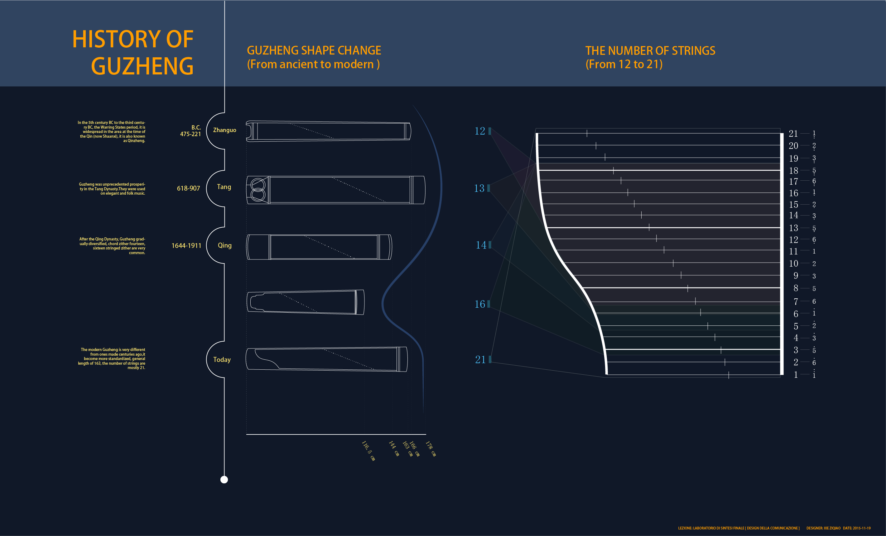

The zheng or guzheng, also known as a Chinese zither, is a Chinese plucked string instrument with a more than 2,500-year history. The modern guzheng commonly has 21 strings, is 64 inches (1.6 m) long, and is tuned in a major pentatonic scale.
History
There are varied accounts for how the guzheng came to be. An early guzheng-like instrument is said to have been invented by Meng Tian, a general of the Qin dynasty (221-206 BCE), largely influenced by the se.

Technique
The guzheng is plucked by the fingers with or without plectra. Most modern players use plectra that are attached to up to four fingers on each hand.